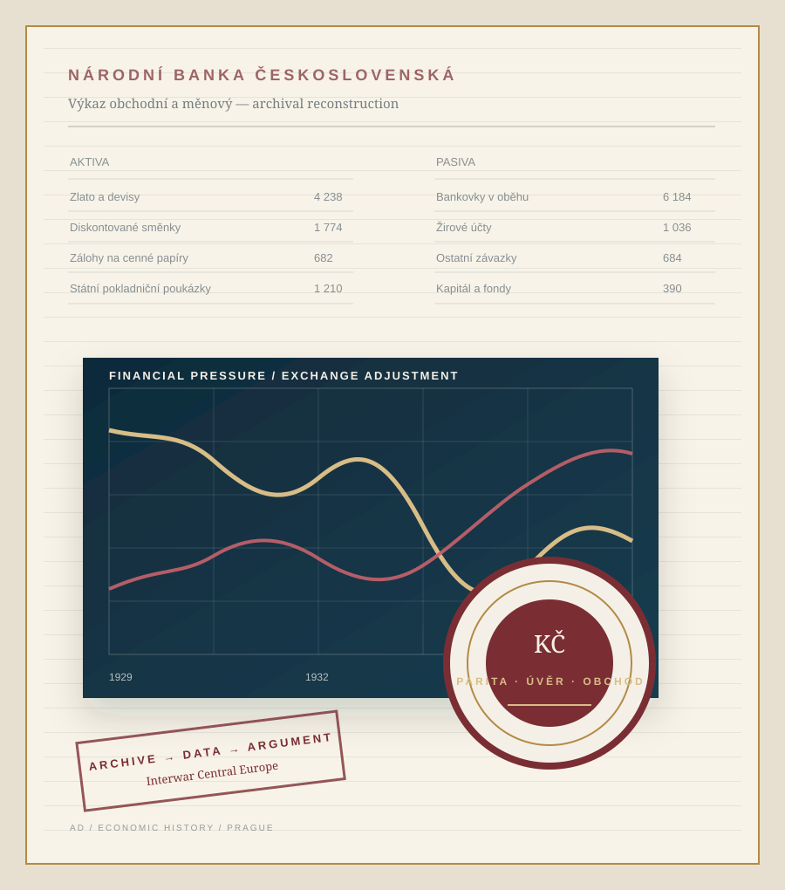

Adam Dittrich, PhD
Economic historian · Prague
Adam Dittrich, PhD
Assistant Professor · Economic History
Prague University of Economics and Business
I study how monetary regimes, financial institutions, and economic ideas shaped adjustment in interwar Central Europe—especially Czechoslovakia. My work combines archival research, historical reconstruction, and cliometric methods.
Monetary history · Financial history · International trade · Historical measurement · History of economic thought

1920s–1930s core historical period
Monthly + bilateral new historical evidence
Archives + econometrics integrated research design
Central Europe international questions
Research agenda
A small economy under large constraints
Czechoslovakia provides unusually sharp evidence on the central dilemmas of the interwar economy: monetary credibility versus domestic recovery, financial stability versus deflation, and national policy autonomy within a fragmented international system. I use that case to address questions that travel beyond one country.
Monetary regimes
How did gold-standard commitments, reserve rules, and central-bank strategy shape the timing and distribution of adjustment?
Financial stress
Can balance-sheet and market indicators recover the chronology of banking pressure before failures or institutional breaks become visible?
Trade and adjustment
Did the Great Depression merely compress European trade, or did it reorganise durable bilateral relationships?
Economic ideas
How did theories of value, causality, and economic order enter practical debates over currency, crisis, and state intervention?
Selected work
Selected research
The Crown Against the World
Reconstructing Czechoslovakia’s effective exchange rates, 1920–1938, to examine monetary policy and international adjustment across the interwar period.
Measuring Financial Stress under the Gold Standard
A monthly composite measure reconstructs the sequence of financial pressure in interwar Czechoslovakia and distinguishes monetary strain, banking tension, and the later real-economy trough.
Commercial Hysteresis in Depression-Era Europe
A bilateral panel for 21 European economies asks whether crisis-era trade disruption left persistent scars in the geography of commerce between 1927 and 1938.
Negative Time Preference and the Czech Sugar Industry
With Jiří Rytina, this project studies how industrial actors justified intertemporal sacrifice and social provision in the Czech sugar industry from 1896 to 1926.
Open historical evidence
Data are part of the argument
My research builds reusable evidence—not only regression inputs. Public projects include monthly financial-stress indicators for interwar Czechoslovakia, a bilateral trade panel spanning 21 European economies, and replication materials for research on Nordic trade resilience.
11 financial-stress indicators
21 European economies
1927–38 bilateral trade coverage
Recent
Research updates
Research, data, collaboration
Interested in interwar Central Europe?
I welcome exchanges on monetary and financial history, historical macroeconomic data, Czechoslovak sources, and comparative projects on the Great Depression.